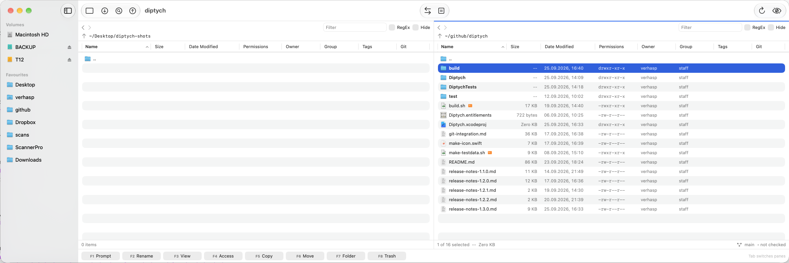
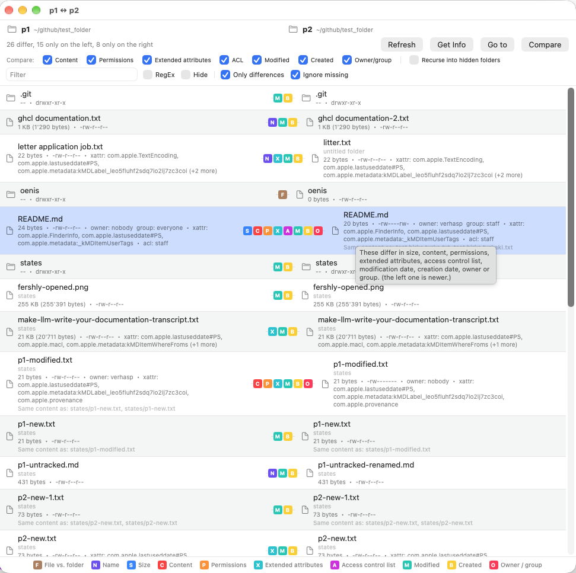
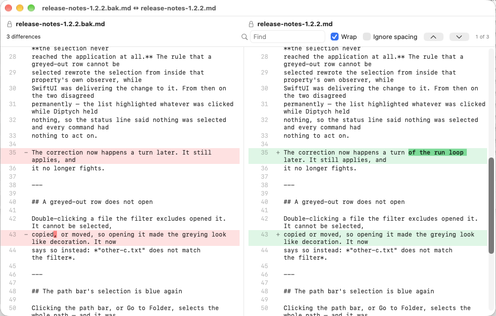
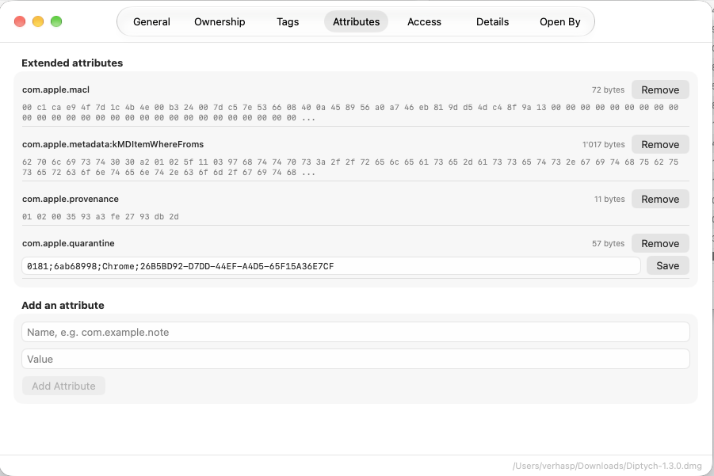

Diptych — pronounced ‘deep tech’ — the agentic Swiss pocket knife of file managers for macOS.
Diptych is a free, open-source file manager for macOS — two panes, a keyboard that does the work, an AI agent that sees what you see and asks before it touches anything, a whole tree in one filtered list, an editor that knows JSON, XML and YAML, your file servers, and a genuinely useful way to compare two files or two whole folders.
Free and open source · macOS 15 or later · Notarized by Apple · No telemetry, no account

AI agent
At the bottom of every window there is an agent terminal: Claude Code, Codex, Copilot — whichever agent you use — already connected to Diptych through MCP, the Model Context Protocol. It knows what you have selected, what each pane shows, what a comparison found. And it changes nothing behind your back: every change it wants is a list you review first.
~/.diptych/agentic $ claude
> Which of the selected files is the largest?
⏺ diptych · get_selection
manual.pdf — the largest of the four files you selected.
> Tag the 2025 invoices in the other pane Red, and remove the quarantine from the PDFs I selected.
⏺ diptych · propose_file_operations
The review window is open in Diptych: 15 operations, each one shown with what it has now and what it will have. Untick anything you don't want, then Execute.
An example conversation. The agent asked Diptych — it was never told a file name.
.mcp.json and an AGENTS.md that tells it to work on your files only through Diptych.
Flat view
⇧⌘F turns a pane into one list of a folder and everything
under it, filtered by an expression much like find's —
but readable, completed as you type, and warned about when it can
never match. The rows are ordinary rows: copy, move, rename, trash,
or Rename Many all of them at once.
taken — the date the video was taken, compared as modified is
| Name | Size | Taken |
|---|---|---|
| 2024/Summer/IMG_4471.mov | 1.2 GB | 2024-07-02 18:41 |
| 2024/Summer/Lake/IMG_4519.mov | 812 MB | 2024-07-14 09:05 |
| 2024/Summer/Lake/drone-pass.mp4 | 2.4 GB | 2024-07-14 11:30 |
| Imports/GX010233.mp4 | 3.9 GB | 2024-08-21 16:12 |
name = "*.txt", name ~ /^IMG_\d+/i,
path != "*/.git/*" — shell patterns or regular
expressions, and != or !~ for not.
size > 10MB, modified < 2025-01-01,
created = 2024-07 for the whole month,
size between (1MB, 10MB].
directory traversed to walk without listing,
directory listed for the opposite;
link broken, link loop,
link and directory.
access = "rwx***---", place by place;
owner = "peter", group ~ /staff/,
xattr("com.apple.quarantine").
contains "TODO", or line by line as
grep: contains ~ /FIXME|XXX/. Binary
files are never searched for text by chance.
camera = "*iPhone*", iso >= 1600,
city = "Budapest", near(47.49, 19.04, 5km),
duration > 10min — from the header, never the
pixels, and never sent anywhere.
Comments go between /* and */,
anywhere in an expression and over several lines — which is also the
quick way to switch part of one off for a run without deleting it.
size > 10MB and size < 1MB.
images once, then write images and size > 1MB. Every version is kept, and Undo takes a save back.
apply-to: header is an expression of it, asked of each selected file — file and name = "*.jpg", image and located.
Text Edit
Text Edit keeps what you type exactly as you typed it — quotes stay straight, two hyphens stay two hyphens — and saves the file with the line endings and encoding it came with. JSON, XML, YAML, TOML and property lists are coloured, paired, folded, checked and formatted, and shown as a tree in which you edit the structure while the text stays yours.
| Key | Value | |
|---|---|---|
| 2 | ▾ catalog | 2 children |
| 3 | ▾ book | 4 children |
| 3 | @id | bk101 |
| 4 | author | Gambardella, Matthew |
| 5 | title | XML Developer's Guide |
| 6 | #comment | reprinted ↩ second edition 2001 |
| 8 | ▸ book | 4 children |
@ before an element's name and <name>Diptych</name> becomes name="Diptych" on its parent; take it away to go back.
yq's YAML path, or PlistBuddy's key path for the clicked node. ⌘F finds in names and values, folded or not.
.plist opens as its tree of String, Integer, Real, Boolean, Date, Data, Dictionary and Array; a binary one is shown as XML and saved as binary — or converted.
<catalog> <book id="bk102"> <author>Ralls, Kim</author>
>, ="", -->, the innermost open element's end tag — shown in grey and taken with ⌃Space. Closing a start tag puts in its end tag.
xml:space="preserve" untouched. An invalid file is left alone.
File servers
Go ▸ Connect to Server… (⌘K) mounts a share and opens it in the active pane. Signing in is macOS's own window, with your Keychain — Diptych never sees a password. Star a server and it stays in the sidebar, a click away.
| Address | Server |
|---|---|
smb://nas/photos, or just nas/photos | Windows shares, most NAS boxes, Azure Files |
nfs://host/export/path | NFS, Google Cloud Filestore |
https://dav.example.com/remote.php/dav | WebDAV: Nextcloud, ownCloud, many NAS boxes |
ftp://host | FTP, which macOS mounts read-only |
afp://old-mac/share | AFP, for old Macs and Time Capsules |
SFTP and S3 cannot be mounted by macOS itself; mounted with Mountain Duck, rclone or sshfs, they are folders like any other.
Scripts and programs
Put a script in ~/.diptych/scripts, say in its header
what it applies to, and it appears in the right-click menu for the
files it suits. Diptych is strict about what it executes, because the
danger is a script that arrived by mail, not the one you wrote.
Or start with the ones that come with Diptych: File ▸ Get Scripts… installs them from inside the app, signed with it — read each one first with Show Source.
com.apple.quarantine — one that came from a browser, mail or a chat — is refused.
r--------.
call line is split into words before anything is put in, and no shell reads it: my notes (draft).txt arrives whole.
Everyday driving
Built for people who move, rename, and inspect files all day, and would rather not reach for the mouse to do it.
Tab switches panes, F5/F6 copy or move to the other side, ⇧⌘↑/⇧⌘↓ put files in an order of your own, and every command lives in the menus too, for the days F-keys are busy dimming your screen.
Reverses copies, moves, renames, permission and owner changes — across the whole session, fifty steps deep — and asks first when undoing would put something in the Trash.
One regular expression over a folder, the selection, or everything a flat view found, with every new name shown before anything happens. Nothing is renamed until all of it can be — no half-finished batch left to sort out by hand.
Runs the git already on your Mac — nothing bundled,
nothing linked — and colours names by what sending your work would
actually do. Off until you switch it on.
A hex editor for the files that aren’t text at all, built in — and it reads back what it saved, so a server that quietly dropped the change cannot fool you.
Dates, camera, description and location on a map — paste a place from Google Maps — for many pictures at once, and an erase that Undo takes back.
Rotate and flip without losing quality, convert and resize, remove the location, cut out the subject, read the text in it — with Vision, on this Mac, never sent anywhere.
Other apps' Show in Finder can open the folder in Diptych, the file selected — one setting, and one to undo it.
A panel with the file, the bytes and an estimate, a Cancel that really stops — and a queue that lists what is waiting, by name, with a time for all of it.
Compare
Two text files get a real line-by-line diff. Two of anything else get an honest byte-by-byte answer. And two whole folders get a window of their own — every file paired up, colour-coded, with a legend so nobody has to memorise the letters.


Information
⌘I opens an Info window for the file: what the file system keeps about it, what the file says about itself, and who has it open — each tab applied on its own, and every refusal said out loud.

Rename in place, the kind and size, and the created and modified dates — editable, not just shown.
Owner and group pickers, the nine bits and setuid, setgid and
sticky with the octal mode, and the access control list as
ls -le writes it.
Every attribute xattr shows — text values edited in
place, binary ones shown as hex and removable, quarantine
included.
Finder tags with their colours, and a folder's custom icon shown, set or taken away.
What the file says about itself: EXIF and GPS with a map link, PDF pages and permissions, a film's tracks and codecs, and what Spotlight knows.
Which programs have the file open — or, for a folder, anything inside it, or stand in it — which is what stops it being moved.
A change the file will not take is reported, then offered with a brief unlock and relock, then with your password.
Why another file manager
Diptych is built around an AI agent that sees your panes, works through the same operations you do, and changes nothing you have not reviewed.
01
Not a chat window beside your files: the selection, both panes, what a comparison or a flat view found. “These”, “the other side” and “the ones that differ” mean what they mean to you.
02
Moves, renames, permissions, tags: the agent hands over a list, you review it, untick what you don't want, and run it. Undo takes back what it did, as it takes back what you did.
03
Rename photos by the date they were taken, sort invoices into folders by year, find what is in one tree and not the other — asked in words, not hunted for in menus no file manager could have enough of.
04
Around the agent, the tools you would otherwise open five apps for: a query language for whole trees, an editor for structured files, folder comparison, file servers, scripts — made in Switzerland.
And the basics, as they should be everywhere: free and open source, native, signed and notarized by Apple, no telemetry, no account.
Get Diptych
Download the disk image, drag Diptych into Applications, done.